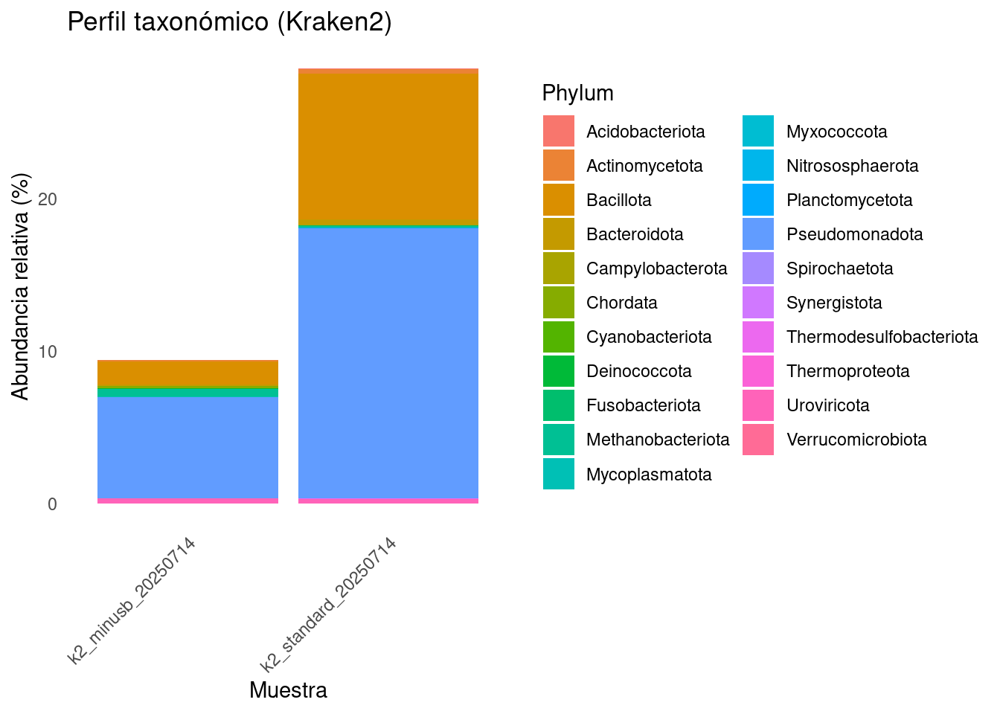
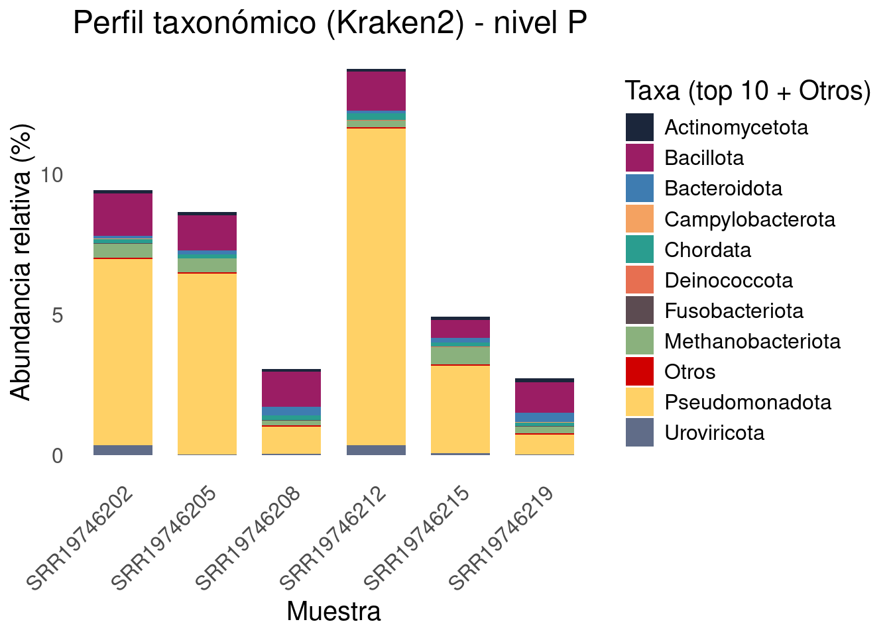
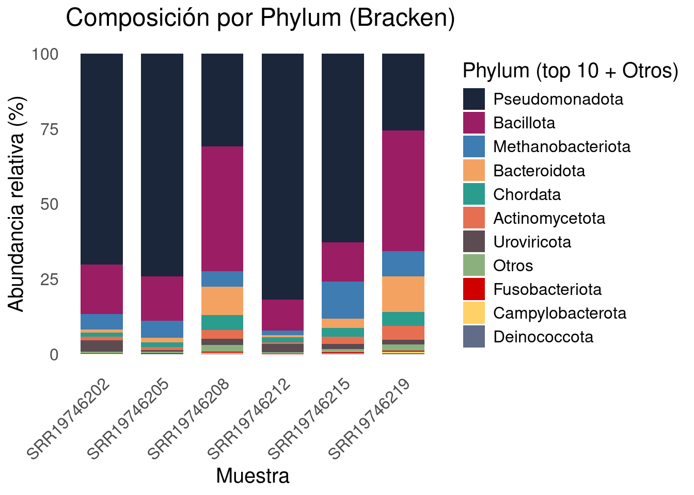

mkdir 2025_metagenomics_profile
cd 2025_metagenomics_profile
mkdir dbs
cd dbsPerfil Taxonómico de metagenomas usando Kraken

Introducción
Vamos a utilizar Kraken v2, lo puedes descragar aquí.
Este tutorial se hizo utilizando un equipo ASUSTeK COMPUTER INC. G75VW con procesador Intel® Core™ i7-3610QM CPU @ 2.30GHz × 8, 24 GB de RAM.
Advertencia ⚠️. Según tus capacidades computacionales puedes utilizar bases de datos más grandes para clasificar, entre mayor tamaño mayor cantidad de memoría RAM necesitarás. Aquí te dejo algunas disponibles, puedes ver más a detalle de su indexación y la gran variedad de bases de datos que ya existen aquí:
| Colección | Contenido | Fecha | Tamaño de archivo (GB) | Tamaño Index (GB) | HTTPS URL | Inspeccionar | Librería | MD5 |
|---|---|---|---|---|---|---|---|---|
| Viral | Refseq viral | 7/14/2025 | 0.5 | 0.6 | .tar.gz | .txt | .tsv | .md5 |
| MinusB | Refseq archaea, viral, plasmid, human1, UniVec_Core | 7/14/2025 | 7.7 | 10.8 | .tar.gz | .txt | .tsv | .md5 |
| Standard | Refseq archaea, bacteria, viral, plasmid, human1, UniVec_Core | 7/14/2025 | 70.8 | 91.8 | .tar.gz | .txt | .tsv | .md5 |
| Standard-8 | Standard with DB capped at 8 GB | 7/14/2025 | 5.5 | 7.5 | .tar.gz | .txt | .tsv | .md5 |
| Standard-16 | Standard with DB capped at 16 GB | 7/14/2025 | 11.2 | 14.9 | .tar.gz | .txt | .tsv | .md5 |
| PlusPF | Standard plus Refseq protozoa & fungi | 7/14/2025 | 75.9 | 98.4 | .tar.gz | .txt | .tsv | .md5 |
| PlusPF-8 | PlusPF with DB capped at 8 GB | 7/14/2025 | 5.5 | 7.5 | .tar.gz | .txt | .tsv | .md5 |
| PlusPF-16 | PlusPF with DB capped at 16 GB | 7/14/2025 | 11.2 | 14.9 | .tar.gz | .txt | .tsv | .md5 |
| PlusPFP | Standard plus Refseq protozoa, fungi & plant | 7/14/2025 | 155.7 | 210.6 | .tar.gz | .txt | .tsv | .md5 |
| PlusPFP-8 | PlusPFP with DB capped at 8 GB | 7/14/2025 | 5.2 | 7.5 | .tar.gz | .txt | .tsv | .md5 |
| PlusPFP-16 | PlusPFP with DB capped at 16 GB | 7/14/2025 | 10.5 | 14.9 | .tar.gz | .txt | .tsv | .md5 |
| EuPathDB462 | Eukaryotic pathogen genomes with contaminants removed | 4/18/2023 | 8.4 | 11 | .tar.gz | .txt | N/A | N/A |
| core_nt Database | Very large collection, inclusive of GenBank, RefSeq, TPA and PDB | 6/9/2025 | 183.0 | 238.2 | .tar.gz | .txt | .tsv | .md5 |
GTDB v226 (genomic_files_reps) |
Bacterial and archaeal | 6/9/2025 | 500.9 | 644.0 | .tar.gz | .txt | .tsv | .md5 |
Para este tutorial vamos a trabajar con la base de datos indexada MinusB (enfocada en bacterias y arqueas, más ligera) y Standard-16 (más completa, incluyendo eucariotas, pero requiere más memoria). Como datos de metagenoma vamos a utilizar los que previamente habiamos trimeado y filtrado de contaminación de hospedero.
| SRA ID | Condición | Etapa de crecimiento |
|---|---|---|
| SRR19746212 | Periodo Normal | Novillas en crecimiento |
| SRR19746215 | Estrés Térmico | Novillas en crecimiento |
| SRR19746202 | Periodo Normal | Novillas |
| SRR19746205 | Estrés Térmico | Novillas |
| SRR19746208 | Periodo Normal | Vacas Lactantes |
| SRR19746219 | Estrés Térmico | Vacas Lactantes |
Preparación de base de datos indexada
Para este proceso vamos a generar un directorio llamado 2025_metagenomics_profile
mkdir db_minusb
cd db_minusb
wget https://genome-idx.s3.amazonaws.com/kraken/k2_minusb_20250714.tar.gz
tar -xzf k2_minusb_20250714.tar.gzcd ..
mkdir db_standard
cd db_standard
wget https://genome-idx.s3.amazonaws.com/kraken/k2_standard_16_GB_20250714.tar.gz
tar -xzf k2_standard_16_GB_20250714.tar.gzKraken2
Kraken2 es una herramienta bioinformática rápida y precisa para clasificar secuencias de ADN de muestras metagenómicas (como las de microbiomas) en categorías taxonómicas, como bacterias, virus, arqueas o eucariotas. Es ampliamente usada en estudios de microbiología y ecología para identificar “quién está ahí” en una mezcla de organismos.
Cómo funciona de manera simple:
Construcción de la base de datos: Kraken2 crea un índice (database) a partir de genomas de referencia (como los que descargaste: minusb para bacterias y arqueas, o standard para una cobertura más amplia). Divide los genomas en “k-mers” (subsecuencias cortas de longitud fija, por ejemplo, 31 bases). Cada k-mer se asocia al ancestro común más bajo (LCA, por sus siglas en inglés) de los taxones que lo comparten, para manejar ambigüedades.
Clasificación de reads: Para tus archivos FASTQ (secuencias de lecturas), Kraken2 divide cada read en k-mers y los busca en la base de datos. Cuenta los “hits” (coincidencias) para diferentes taxones y asigna el read al taxón con el mejor puntaje (basado en la raíz del árbol taxonómico). Si no hay coincidencias, el read se marca como “no clasificado”.
Ventajas: Es muy rápido (usa hashing para búsquedas eficientes) y maneja datos paired-end como los tuyos. Puedes ajustar parámetros como la confianza (–confidence) para mayor precisión.
Limitaciones: Depende de la calidad de la base de datos; si un organismo no está en ella, no se detectará.
Para este punto es conveniente tener las secuencias pareadas en un solo archivo concatenado FASTQ. En caso de que tengas tus archivos en dos archivos separados fwd y rev, puedes preprocesarlos usando kraken --paired.
Explicación breve de opciones usadas:
--paired: entrada paired-end.--gzip-compressed: tus fastq están gz.--use-names: muestra nombres taxonómicos legibles en el output.--report: resumen por taxón (ideal para downstream).--output: asignaciones por lectura (format columnas).--classified-out/--unclassified-out: opcional, guarda reads clasificados/no clasificados (usar#para pares).--confidence: opcional, umbral de confianza (ejemplo0.1si quieres mayor especificidad).
MinusB
"./bin/kraken2/kraken2" \
--db "dbs/db_minusb"\
--paired \
--gzip-compressed \
--threads 7 \
--use-names \
--report "kraken2_report_k2_minusb_20250714.txt" \
--output "kraken2_output_k2_minusb_20250714.tsv" \
--classified-out "kraken2_classified_k2_minusb_20250714_#.fq" \
--unclassified-out "kraken2_unclassified_k2_minusb_20250714_#.fq" \
"1_QC/host_filter/SRR19746202_1.fastq.gz" "1_QC/host_filter/SRR19746202_2.fastq.gz"Resultado:
32842930 sequences (9852.88 Mbp) processed in 751.006s (2623.9 Kseq/m, 787.17 Mbp/m).
3196540 sequences classified (9.73%)
29646390 sequences unclassified (90.27%)Standard 16GB
"./bin/kraken2/kraken2" \
--db "dbs/db_standard"\
--paired \
--gzip-compressed \
--threads 7 \
--use-names \
--report "kraken2_report_k2_standard_20250714.txt" \
--output "kraken2_output_k2_standard_20250714.tsv" \
--classified-out "kraken2_classified_k2_standard_20250714_#.fq" \
--unclassified-out "kraken2_unclassified_k2_standard_20250714_#.fq" \
"1_QC/host_filter/SRR19746202_1.fastq.gz" "1_QC/host_filter/SRR19746202_2.fastq.gz"Resultado:
32842930 sequences (9852.88 Mbp) processed in 581.113s (3391.0 Kseq/m, 1017.31 Mbp/m).
9536390 sequences classified (29.04%)
23306540 sequences unclassified (70.96%)Escoger la base de datos adecuada influye drasticamente en la clasificación de las lecturas.
Output Kraken2
Kraken2 nos arroja como output los siguientes archivos:
Cuando corres los comandos que te pasé, obtienes cuatro tipos principales de archivos por base de datos:
kraken2_output_*.tsv
Contiene una línea por cada lectura.
Columnas típicas:
C/U → si fue clasificada (C) o no (U).
Read ID.
TaxID asignado.
Longitud de la secuencia.
K-mers clasificados / asignaciones.
Útil si quieres rastrear lecturas individuales, pero no es práctico para gráficos de composición.
kraken2_report_*.txt
Es el archivo más importante para resúmenes.
Contiene la composición taxonómica del metagenoma en forma de tabla jerárquica.
Columnas típicas:
% de lecturas asignadas a ese taxón (incluyendo descendientes).
lecturas asignadas directamente a ese taxón.
lecturas totales (taxón + descendientes).
TaxID.
Nivel taxonómico (U = root, D = dominio, P = filo, C = clase, O = orden, F = familia, G = género, S = especie, etc.).
Nombre del taxón.
Este archivo sirve como entrada ideal para hacer gráficos de barras apiladas (ejemplo: abundancias relativas por filo o por género).
Si después usas Bracken, este mismo archivo puede refinarse para obtener abundancias corregidas.
kraken2_classified_*.fq
- Contiene las lecturas que sí fueron clasificadas por Kraken2, separadas en pares (
_1.fqy_2.fq).
Útil si quieres analizar solo la fracción clasificada (ej. ensamblaje por taxón específico).
kraken2_unclassified_*.fq
Contiene las lecturas que no pudieron clasificarse (no coincidieron con la base de datos).
Útil si quieres estudiar la “parte desconocida” del metagenoma o reanalizar con otra base de datos.
Visualización del Perfil Taxonómico
En R:
Código para barras apiladas
# Instalar paquetes si no los tienes
# install.packages(c("tidyverse"))
library(tidyverse)
#Lista tus archivos Kraken2 report
# Ajusta la ruta donde guardaste los reportes
report_files <- list.files(
path = "reports",
pattern = "kraken2_report_.*\\.txt$",
full.names = TRUE
)
# Función para leer un reporte y extraer nivel taxonómico deseado
read_kraken_report <- function(file, rank = "P") {
# rank: D=Domain, P=Phylum, C=Class, O=Order, F=Family, G=Genus, S=Species
df <- read.table(file, sep = "\t", header = FALSE, quote = "", comment.char = "", fill = TRUE)
colnames(df) <- c("percent", "reads_clade", "reads_direct", "rank_code", "ncbi_taxid", "name")
df$name <- trimws(df$name)
df <- df %>% filter(rank_code == rank)
# Agregar columna con nombre de la muestra (a partir del archivo)
sample_id <- basename(file) %>% str_remove("^kraken2_report_") %>% str_remove("\\.txt$")
df$sample <- sample_id
return(df)
}
# Leer todos los reportes
all_reports <- map_dfr(report_files, read_kraken_report, rank = "P") # "P" = Phylum
# Normalizar datos para gráfico
# Tomamos % directamente de Kraken2 (ya está normalizado)
plot_data <- all_reports %>%
select(sample, name, percent)
plot_data <- plot_data %>%
filter(percent > 0)
# Graficar barras apiladas
ggplot(plot_data, aes(x = sample, y = percent, fill = name)) +
geom_bar(stat = "identity") +
labs(
title = "Perfil taxonómico (Kraken2)",
x = "Muestra",
y = "Abundancia relativa (%)",
fill = "Phylum"
) +
theme_minimal() +
theme(
axis.text.x = element_text(angle = 45, hjust = 1),
panel.grid = element_blank()
)
RUN_kraken.sh
#!/usr/bin/env bash
set -euo pipefail
THREADS=8
FASTQ_DIR="2025_metagenomics_direct/1_QC/host_filter"
KRAKEN="2025_metagenomics_direct/bin/kraken2/kraken2"
DB_PARENT="2025_metagenomics_direct/dbs"
DB_DIR="$DB_PARENT/db_minusb"
OUT_DIR="025_metagenomics_direct/kraken2_k2_standard_16GB_20250714"
USE_NAMES="--use-names"
GZIP_COMP="--gzip-compressed"
CONFIDENCE=""
mkdir -p "$OUT_DIR"
# Loop sobre todos los pares *_1.fastq.gz
shopt -s nullglob
for R1 in "$FASTQ_DIR"/*_1.fastq.gz; do
R2="${R1%_1.fastq.gz}_2.fastq.gz"
SAMPLE=$(basename "$R1" "_1.fastq.gz")
SAMPLE_OUT="$OUT_DIR/$SAMPLE"
mkdir -p "$SAMPLE_OUT"
if [[ ! -f "$R2" ]]; then
echo "SKIP: no existe R2 para $SAMPLE:"
echo " R1=$R1"
echo " R2=$R2"
continue
fi
echo "=== Ejecutando Kraken2 para muestra: $SAMPLE ==="
echo "R1: $R1"
echo "R2: $R2"
echo "Salida: $SAMPLE_OUT"
"$KRAKEN" \
--db "$DB_DIR" \
--paired \
$GZIP_COMP \
--threads "$THREADS" \
$USE_NAMES \
$CONFIDENCE \
--report "$SAMPLE_OUT/${SAMPLE}.report" \
--output "$SAMPLE_OUT/${SAMPLE}.kraken" \
"$R1" "$R2" \
2>&1 | tee "$SAMPLE_OUT/${SAMPLE}_kraken.log"
echo ">>> Terminado $SAMPLE"
echo
done
echo "Procesamiento completado. Reportes en: $OUT_DIR"Perfil taxonómico de todas las muestras
Código para barra apiladas de todas las muestras
library(tidyverse)
library(stringr)
report_dir <- "all_reports/"
out_prefix <- file.path(report_dir, "kraken2_combined")
dirs <- list.dirs(report_dir)[-1]
rank_to_use <- "P" # "P" = Phylum; usar "G" para Genus, "S" para Species, etc.
top_n_taxa <- 10 # número de taxones a destacar; el resto se agrupa como "Otros"
#List archivos de reporte (soporta nombres tipo kraken2_report_*.txt y *.report)
report_files <- sapply(dirs, function(x){
list.files(
path = x,
pattern = "kraken2_report_.*\\.txt$|.*\\.report$",
full.names = TRUE
) %>% sort()
})
if(length(report_files) == 0) stop("No se encontraron archivos de reporte en: ", report_dir)
# Función para parsear un kraken2 report usando regex
read_kraken_report <- function(file, rank = "P") {
lines <- readLines(file, warn = FALSE)
pat <- "^\\s*([0-9]+\\.?[0-9]*)\\s+([0-9]+)\\s+([0-9]+)\\s+([A-Za-z])\\s+([0-9]+)\\s+(.*)$"
m <- stringr::str_match(lines, pat)
# m is Nx7 matrix: [,2]=percent [,3]=reads_clade [,4]=reads_direct [,5]=rank [,6]=taxid [,7]=name
df <- tibble(
percent = suppressWarnings(as.numeric(m[,2])),
reads_clade = suppressWarnings(as.integer(m[,3])),
reads_direct= suppressWarnings(as.integer(m[,4])),
rank_code = m[,5],
taxid = m[,6],
name = str_trim(m[,7])
) %>%
filter(!is.na(rank_code)) # quitar líneas que no matchearon
# Nombre de la muestra inferido del nombre de archivo
sample_id <- basename(file) %>%
str_remove("^kraken2_report_") %>%
str_remove("\\.txt$") %>%
str_remove("\\.report$")
df <- df %>% filter(rank_code == rank) %>% mutate(sample = sample_id)
return(df)
}
# Leer y combinar todos los reportes
all_reports <- map_dfr(report_files, read_kraken_report, rank = rank_to_use)
if(nrow(all_reports) == 0) stop("No se encontró ningún registro con el nivel taxonómico solicitado (rank = ", rank_to_use, ")")
# Calcular total por taxón en todas las muestras para seleccionar top N
top_taxa <- all_reports %>%
group_by(name) %>%
summarise(total_percent = sum(percent, na.rm = TRUE)) %>%
arrange(desc(total_percent)) %>%
slice_head(n = top_n_taxa) %>%
pull(name)
plot_data <- all_reports %>%
mutate(taxa_plot = if_else(name %in% top_taxa, name, "Otros")) %>%
group_by(sample, taxa_plot) %>%
summarise(percent = sum(percent, na.rm = TRUE), .groups = "drop")
# Asegurar orden de muestras consistente (alfabético o puedes definir otro orden)
plot_data <- plot_data %>% mutate(sample = factor(sample, levels = sort(unique(sample))))
# Plot: barras apiladas
ggplot(plot_data, aes(x = sample, y = percent, fill = taxa_plot)) +
geom_bar(stat = "identity", width = 0.7) +
labs(
title = paste0("Perfil taxonómico (Kraken2) - nivel ", rank_to_use),
x = "Muestra",
y = "Abundancia relativa (%)",
fill = paste0("Taxa (top ", top_n_taxa, " + Otros)")
) +
theme_minimal() +
theme(
axis.text.x = element_text(angle = 45, hjust = 1),
panel.grid = element_blank(),
text = element_text(size = 15)
) +
scale_fill_manual(values = c(
"#1B263B",
"#9B1D64",
"#3E7CB1",
"#F4A261",
"#2A9D8F",
"#E76F51",
"#5C4B51",
"#8AB17D",
"#D00000",
"#FFD166",
"#606C88"
))
Bracken
Bracken (Bayesian Reestimation of Abundance with Kraken), lo puedes descargar de aquí, toma los reportes de Kraken2 y redistribuye las asignaciones de reads, especialmente los ambiguos, para dar estimaciones más precisas de abundancia relativa. Kraken2 asigna reads a taxones basándose en k-meros, pero no ajusta por diferencias en el tamaño de genomas o sesgos de cobertura. Bracken corrige esto, lo que es ideal para gráficos de barras apiladas o análisis cuantitativos.
Bracken no usa los archivos FASTQ (SRR19746202_1.fastq.gz y SRR19746202_2.fastq.gz). En cambio, trabaja con los archivos de salida de Kraken2: los archivos .report.txt (clasificaciones por read) y/o .report.txt (reporte taxonómico).
Bracken necesita acceder a la misma base de datos que usaste en Kraken2 (db_minusb o db_standard) porque consulta los índices para ajustar abundancias.
python bin/Bracken/src/est_abundance.py \
-i kraken2_report_k2_minusb_SRR19746205.txt \
-k dbs/db_minusb/database150mers.kmer_distrib \
-l P \
-o bracken_SRR19746205.txt
-t 10Explicación de los parámetros:
-d: Directorio de la base de datos de Kraken2.-i: Archivo .report.txt de Kraken2 como entrada.-o: Archivo de salida con el reporte ajustado de Bracken.-l: Nivel taxonómico (P para Phylum, S para especie, G para género, etc.). Usa S aquí, pero cámbialo a G si prefieres género para el gráfico.-t: Umbral mínimo de reads (10 es un valor conservador).
Visualización de los resultados
Código para barra apiladas de todas las muestras
library(tidyverse)
bracken_dir <- "bracken_reports"
out_prefix <- file.path(bracken_dir, "bracken_phylum_combined")
top_n_taxa <- 10 # cantidad de phyla a mostrar; resto -> "Otros"
# Listar archivos bracken (pattern: *_bracken.txt)
bracken_files <- list.files(bracken_dir, pattern = "_bracken\\.txt$", full.names = TRUE) %>% sort()
# Función para leer cada archivo y extraer Phylum
read_bracken_file <- function(f) {
df <- read.table(f, header = TRUE, sep = "\t", quote = "", comment.char = "", stringsAsFactors = FALSE, fill = TRUE)
# Asegurarse de columnas esperadas
expected_cols <- c("name","taxonomy_id","taxonomy_lvl","kraken_assigned_reads","added_reads","new_est_reads","fraction_total_reads")
present <- intersect(expected_cols, colnames(df))
if(!("taxonomy_lvl" %in% colnames(df))) stop("El archivo ", f, " no tiene columna 'taxonomy_lvl'")
# Filtrar phylum
dfp <- df %>%
filter(taxonomy_lvl == "P") %>%
transmute(
name = as.character(name),
taxonomy_id = taxonomy_id,
kraken_assigned_reads = if("kraken_assigned_reads" %in% colnames(df)) kraken_assigned_reads else NA_integer_,
added_reads = if("added_reads" %in% colnames(df)) added_reads else NA_integer_,
new_est_reads = if("new_est_reads" %in% colnames(df)) new_est_reads else NA_real_,
fraction_total_reads = if("fraction_total_reads" %in% colnames(df)) fraction_total_reads else NA_real_
)
sample <- basename(f) %>% str_remove("_bracken\\.txt$")
dfp <- dfp %>% mutate(sample = sample)
return(dfp)
}
# Leer y combinar
bracken_list <- map(bracken_files, read_bracken_file)
bracken_all <- bind_rows(bracken_list)
if(nrow(bracken_all) == 0) stop("No hay filas para Phylum (taxonomy_lvl == 'P') en los archivos identificados.")
# Calcular percent preferir fraction_total_reads; si NA -> normalizar new_est_reads por muestra
bracken_all <- bracken_all %>%
group_by(sample) %>%
mutate(
percent = case_when(
!is.na(fraction_total_reads) ~ 100 * fraction_total_reads,
is.na(fraction_total_reads) & !is.na(new_est_reads) & sum(new_est_reads, na.rm = TRUE) > 0 ~ 100 * new_est_reads / sum(new_est_reads, na.rm = TRUE),
TRUE ~ NA_real_
)
) %>%
ungroup()
# Resumir abundancia total por taxon para elegir top N
taxa_totals <- bracken_all %>%
group_by(name) %>%
summarise(total_percent = sum(percent, na.rm = TRUE)) %>%
arrange(desc(total_percent))
top_taxa <- taxa_totals %>% slice_head(n = top_n_taxa) %>% pull(name)
# Agrupar resto como "Otros"
plot_df <- bracken_all %>%
filter(!is.na(percent)) %>%
mutate(taxa_plot = if_else(name %in% top_taxa, name, "Otros")) %>%
group_by(sample, taxa_plot) %>%
summarise(percent = sum(percent, na.rm = TRUE), .groups = "drop")
# Asegurar orden de muestras (alfabético por defecto; ajusta si quieres otro orden)
sample_order <- sort(unique(plot_df$sample))
plot_df <- plot_df %>%
mutate(sample = factor(sample, levels = sample_order))
# Ordenar niveles de taxa_plot para colores/leyenda consistente: por abundancia total descendente
taxa_order <- plot_df %>%
group_by(taxa_plot) %>%
summarise(total = sum(percent, na.rm = TRUE)) %>%
arrange(desc(total)) %>%
pull(taxa_plot)
plot_df <- plot_df %>%
mutate(taxa_plot = factor(taxa_plot, levels = taxa_order))
# # Guardar tablas long y wide
# csv_long <- paste0(out_prefix, "_long.csv")
# csv_wide <- paste0(out_prefix, "_wide.csv")
#
# readr::write_csv(plot_df, csv_long)
# plot_wide <- plot_df %>% pivot_wider(names_from = taxa_plot, values_from = percent, values_fill = 0)
# Plot: barras apiladas (Phylum)
ggplot(plot_df, aes(x = sample, y = percent, fill = taxa_plot)) +
geom_bar(stat = "identity", width = 0.7) +
labs(
title = "Composición por Phylum (Bracken)",
x = "Muestra",
y = "Abundancia relativa (%)",
fill = paste0("Phylum (top ", top_n_taxa, " + Otros)")
) +
theme_minimal() +
theme(
axis.text.x = element_text(angle = 45, hjust = 1),
panel.grid = element_blank(),
text = element_text(size=15)
) +
scale_fill_manual(values = c(
"#1B263B",
"#9B1D64",
"#3E7CB1",
"#F4A261",
"#2A9D8F",
"#E76F51",
"#5C4B51",
"#8AB17D",
"#D00000",
"#FFD166",
"#606C88",
"darkgreen",
"darkblue"
))
HUMAnN 2.0
Para utilizar HUMAnN 2.0 vamos a requerir instalar primero a MetaPhlAn 2.0, estas herramientas también nos permitirán hacer un peril taxonómico de muestras de metagenomica partiendo de los archivos FASTQ.
Vamos a descargar la base de datos que utilizaremos para le perfil taxnómico (Base de datos filtrada UniRef90 EC), vamos a utilizar el mismo directorio 2025_metagenomics_direct/dbs:
humann2_databases --download uniref uniref90_ec_filtered_diamond ./También necesitamos descargar la base de datos ChocoPhlAn:
humann2_databases --download chocophlan full ./Vamos a descargar las herramientas de mapeo:
humann2_databases --download utility_mapping full ./Ahora si corremos el flujo de trabajo completo:
humann2 \
--input 1_QC/host_filter/SRR19746202.fastq.gz \
--output 3_humann2 \
--metaphlan bin/MetaPhlAn2/metaphlan2.py